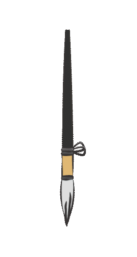
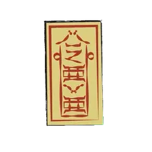

산지 지역에서 행해지던 종교적 의례와 개인 중심의 재앙 해소 방식을 바탕으로 구성된 삼재풀이이다. 자신의 정보를 적은 부적과 옷을 직접 태우며, 재앙을 소멸시키고 무사히 지나가기를 기원하는 특징을 가진다.
신념을 따르며, 차분하게 스스로 해결하는 방식.
이 방식은 불안을 피하기보다 믿음과 의례를 통해 마음을 다스리고 재앙을 극복하는 데 초점을 둡니다. 당신은 흔들리는 상황에서도 자신의 신념을 기준으로 삼으며, 스스로 불안을 정리하고 앞으로 나아갑니다.
풀이 방법
- 준비물
- 부적, 옷(당사자의), 쌀, 한지, 라이터
- 인원
- 1인
- 방법
-
- 삼재부적에 당사자의 이름과 생년월일을 적는다.


- 부적과 함께 옷, 쌀, 한지를 모아 동쪽을 향해 태운다.

- 불이 모두 꺼질 때까지 무사히 삼재를 지나가기를 기원하며 의례를 마친다.

- 삼재부적에 당사자의 이름과 생년월일을 적는다.
- 해설
- 부적은 당사자의 액운을 대신 담는 매개체이며, 옷은 몸을 대신하는 분신을 상징한다. 쌀은 생명력과 풍요를, 한지는 재앙을 함께 담아 태우는 매개체의 의미를 가진다. 동쪽은 새로운 시작과 생명의 방향으로 여겨져, 그 방향을 향해 제물을 태우는 것은 액운을 소멸시키고 무사한 한 해를 맞이하기를 바라는 의미를 담고 있다.